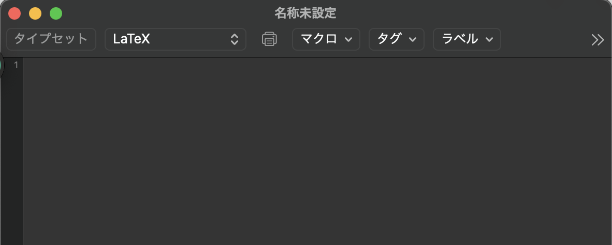
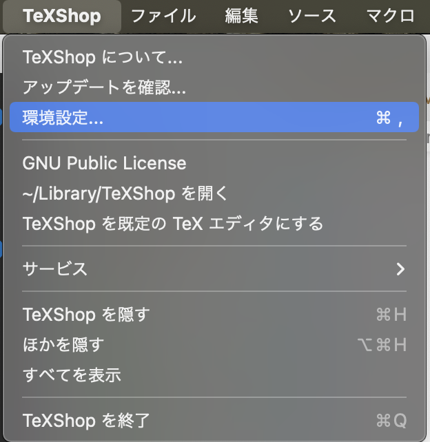
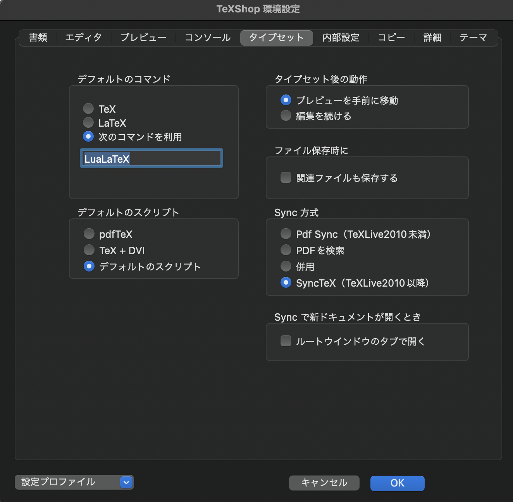

Macの場合
Windowsの場合
まずは TeX を使うための環境設定をします。このページでは Mac の場合の設定を紹介します。 TeX ゼミでは Mac の環境を想定して解説していきますが、 Windows でも問題ないようにします。(Windowsの環境設定は次のページへ)
TeX を使うためには、環境の準備が必要です。Mac には TeX 本体や編集環境といったものがまとまった便利なパッケージがあります。
ここでは MacTeX を導入します。
まずはこのリンクから、 MacTeX.pkg をダウンロードします。
(Safariからダウンロードすることが推奨されているようです)
ダウンロードしたらこのファイルを実行し、指示に従ってインストールを進めます。10〜20分かかります。
「インストールが完了しました。」と出れば MacTeX のインストールが完了です！
MacTeX を入れれば、ターミナルにコマンドを打ち込んで TeX を使うことができますが、せっかくなので付属されているソフトを利用します。
Finder > アプリケーション または Launchpad から TeXShop を開きます。すると、次のようなウィンドウが出るでしょう。

編集・コンパイルをするソフトを一般に「エディター」といいます。TeXShop もその1つで、他にインストールすることで他のエディターを使うことができます。
近年多くのプログラマーに使われている「Visual Studio Code」(通称:VS Code)はさまざまな言語に対応していて、共同編集ができる GitHub にも良く対応しています。
このリンクにあるように、LuaLaTeX を VS Code で使うこともできます。
環境設定はそれぞれの好みだと思うので、自分でカスタマイズできるのであれば特にここでは指定はしません。
ここから設定をしていきます。上部のアップルのロゴの右にある「TeXShop」をクリックして「環境設定」を選択します。

出てくるウィンドウの「タイプセット」を選択して、画像のように設定して「OK」をクリックすれば設定完了です！

TeX にはさまざまな種類があり、基本的な機能は変わりませんが高度になると多少の違いが生じてきます。
ここでは LuaLaTeX という近年利用され始められているものを使います。
日本ではまだまだ (u)pLaTeX が使われていて、場面によっては切り替える必要があります。(それに応じて時々一部コードを変える必要があります。)
基本的にはこのサイトの内容であれば大差がなく、変える必要があればその都度記しますので (u)pLaTeX への切り替え方法も紹介しておきます。
TeXShop の設定において「タイプセット」の左段で LaTeX と TeX + DVI を選択し、「内部設定」で以下の内容を書き込みます。
TeX : ptex2pdf -e -ot "-synctex=1 -file-line-error"
LaTeX : ptex2pdf -l -ot "-synctex=1 -file-line-error"
BibTeXエンジン : pbibtex
TeX のプログラムを pdf に変換するような翻訳作業をコンパイルといいます。TeXShop では簡単にコンパイルすることができます。
中身は後で解説するので、とりあえず次のコードをコピーして画像のように書き込み、左上の「コンパイル」をクリックします。
\documentclass{ltjsarticle}
\begin{document}
ほげほげ
\end{document}
未保存の場合はファイル名と保存場所を求められるので、入力しておきます。
正しく入力・設定できていれば pdf が表示されるはずです！